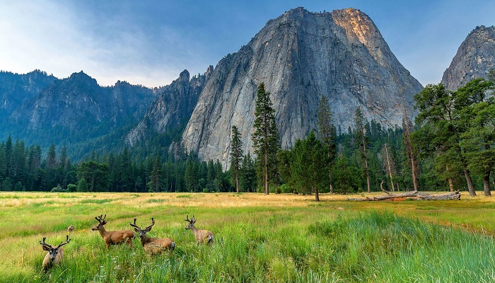

Yosemite National Park is an American national park in California, surrounded on the southeast by Sierra National Forest and on the northwest by Stanislaus National Forest. The park is managed by the National Park Service and covers an area of 3,074 km2 and sits in four counties – centered in Tuolumne and Mariposa, extending north and east to Mono and south to Madera County. Designated a World Heritage Site in 1984, Yosemite is internationally recognized for its granite cliffs, waterfalls, clear streams, giant sequoia groves, lakes, mountains, meadows, glaciers, and biological diversity. Almost 95% of the park is designated wilderness.
Yosemite is one of the largest and least fragmented habitat blocks in the Sierra Nevada, and the park supports a diversity of plants and animals. The park has an elevation range from 648 to 3,997 m and contains five major vegetation zones: chaparral and oak woodland, lower montane forest, upper montane forest, subalpine zone, and alpine. Of California's 7,000 plant species, approximately 50% occur in the Sierra Nevada and more than 20% are within Yosemite. The park contains suitable habitat for more than 160 rare plants, with rare local geologic formations and unique soils characterizing the restricted ranges many of these plants occupy.
